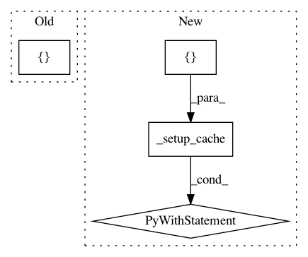

c06e831ff0607c4a986618903b32a917084e3ed4,tests/python/pants_test/backend/python/test_interpreter_cache.py,TestInterpreterCache,test_cache_setup_with_no_filters_uses_repo_default_excluded,#TestInterpreterCache#,60
Before Change
self.assertEqual(cache.setup(filters=filters), expected)
def test_cache_setup_with_no_filters_uses_repo_default_excluded(self):
self._do_test([self._make_bad_requirement(self._interpreter.identity.requirement)], [], [])
def test_cache_setup_with_no_filters_uses_repo_default(self):
self._do_test(("",), [], [self._interpreter])
After Change
def test_cache_setup_with_no_filters_uses_repo_default_excluded(self):
bad_interpreter_requirement = self._make_bad_requirement(self._interpreter.identity.requirement)
with self._setup_cache(constraints=[bad_interpreter_requirement]) as (cache, _):
self.assertEqual([], cache.setup())
def test_cache_setup_with_no_filters_uses_repo_default(self):
with self._setup_cache(constraints=[""]) as (cache, _):
self.assertIn(self._interpreter, cache.setup())
In pattern: SUPERPATTERN
Frequency: 3
Non-data size: 4
Instances
Project Name: pantsbuild/pants
Commit Name: c06e831ff0607c4a986618903b32a917084e3ed4
Time: 2018-09-06
Author: john.sirois@gmail.com
File Name: tests/python/pants_test/backend/python/test_interpreter_cache.py
Class Name: TestInterpreterCache
Method Name: test_cache_setup_with_no_filters_uses_repo_default_excluded
Project Name: pantsbuild/pants
Commit Name: c06e831ff0607c4a986618903b32a917084e3ed4
Time: 2018-09-06
Author: john.sirois@gmail.com
File Name: tests/python/pants_test/backend/python/test_interpreter_cache.py
Class Name: TestInterpreterCache
Method Name: test_cache_setup_with_filter_overrides_repo_default
Project Name: pantsbuild/pants
Commit Name: c06e831ff0607c4a986618903b32a917084e3ed4
Time: 2018-09-06
Author: john.sirois@gmail.com
File Name: tests/python/pants_test/backend/python/test_interpreter_cache.py
Class Name: TestInterpreterCache
Method Name: test_cache_setup_with_no_filters_uses_repo_default